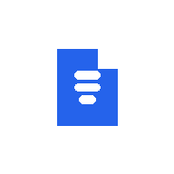

Mermaid و KaTeX
مخططات ```mermaid والمعادلات $math$ تُعرض مباشرة داخل النص — تُحمَّل فقط عندما يحتاجها المستند فعلاً، فتبقى الملاحظات العادية سريعة.

ورقمجاني · يعمل دون اتصال · قابل للتثبيت · MIT
ورق (Waraq) هو قارئ ومحرر ماركداون مجاني لويندوز وماك ولينكس وأندرويد يفتح ملفات .md دون اتصال بالإنترنت، بلا حساب، ويعرض النص العربي والإنجليزي باتجاهه الصحيح تلقائياً — حتى إن كانت اللغتان في المستند نفسه. يمكن تثبيته كتطبيق، وعلى ويندوز وماك ولينكس وChromeOS يمكن أن يصبح التطبيق الذي يفتح به نظامك ملفات .md فعلياً، بدل المفكرة أو صفحة فارغة.
.md/.markdown/.mdx/.txt/.json/.yaml/.log عند النقر المزدوج عليها. على أندرويد، هذا الربط الافتراضي غير متاح بعد (Chrome لا يطبّق هذا الجزء من المعيار هناك)؛ ثبّت ورق واستخدم خيار المشاركة من أي تطبيق بدلاً من ذلك — وهذا يعمل اليوم. يعرض ورق أيضاً مخططات Mermaid والمعادلات الرياضية (KaTeX)، وهو وسيلة جيدة لقراءة ملفات AGENTS.md أو CLAUDE.md أو README.md لأي وكيل ذكاء اصطناعي من هاتفك. بلا حساب، بلا رفع، بلا دفع. التفاصيل الكاملة والموثّقة لكل نظام ومتصفح: جدول الدعم أدناه.
يعمل دون اتصال بعد أول زيارة. لا يُرفع أي ملف تفتحه إلى أي خادم أبداً.
مخططات ```mermaid والمعادلات $math$ تُعرض مباشرة داخل النص — تُحمَّل فقط عندما يحتاجها المستند فعلاً، فتبقى الملاحظات العادية سريعة.
جداول GitHub وقوائم المهام - [ ] تُعرض بشكل طبيعي؛ والبيانات الأولية (front matter) بصيغة YAML تُعرض كبطاقة بيانات قابلة للطي، لا كسطر كود شارد.
كل فقرة وعنوان وخلية جدول تأخذ اتجاه القراءة الصحيح تلقائياً من خوارزمية الاتجاه ثنائي الاتجاه في المتصفح — بلا زر تبديل يدوي، وبلا إعداد واحد يشمل كل المستند.
التقارير والسجلات الكبيرة تُعرض قسماً بعد قسم أثناء التمرير، بدل تجميد التبويب عند الفتح.
على متصفحات Chromium، يحفظ ورق مباشرة في نفس الملف عبر واجهة الوصول لنظام الملفات — بلا تنزيل واستبدال يدوي.
لا خادم، لا حساب، لا تتبّع. تُقرأ الملفات وتُعرض وتُحفظ محلياً؛ وتصدير HTML مستقل يضع كل شيء في ملف واحد.
.md.md ← فتح باستخدام ← اختر ورق ← فعّل استخدام هذا التطبيق دائماً..md، واختر ورق من هناك..md فيه.حدّ صريح: خلافاً لويندوز وChromeOS، لا يطبّق Chrome على أندرويد معيار File Handling API الذي يتيح لتطبيق مثبّت أن يظهر في قائمة "فتح باستخدام" لمدير الملفات — لذلك لا يمكن لمدير الملفات اقتراح ورق كتطبيق افتراضي لملفات .md حالياً. أما مشاركة ملف إلى ورق من قائمة مشاركة تطبيق آخر فتعمل فعلاً، عبر معيار منفصل (Web Share Target)، يدعمه Chrome على أندرويد منذ الإصدار 76.
.md ← فتح باستخدام ← ورق.Safari (ماك/آيفون) وFirefox لا يطبّقان حتى الآن معيار File Handling API، فلا يمكن تسجيل ورق كتطبيق افتراضي على مستوى النظام هناك. يعمل التطبيق بشكل كامل كتطبيق ويب رغم ذلك: افتح التطبيق ثم استخدم فتح ملف، أو السحب والإفلات، أو اللصق. على ماك باستخدام Chrome أو Edge تحصل على نفس تجربة التثبيت المتاحة لويندوز أعلاه.
ثلاثة معايير ويب مختلفة تقرر معنى "تطبيق افتراضي" في كل نظام، ولا يطبّق أي متصفح الثلاثة معاً في كل مكان. هذا الجدول يوضّح أيها ينطبق تماماً، استناداً إلى بيانات التوافق الحالية لكل محرك — لا إلى دعاية تسويقية.
| النظام | المتصفح | تثبيت كتطبيق | ربط افتراضي "فتح باستخدام" | مشاركة إلى ورق | العمل دون اتصال |
|---|---|---|---|---|---|
| ويندوز | Chrome / Edge | نعم | نعم | نعم (التطبيق المثبّت) | نعم |
| ويندوز | Firefox (143+، سبتمبر 2025) | نعم — تثبيت في شريط المهام فقط؛ غير متاح لـ Firefox المثبّت من متجر Microsoft | لا | لا | نعم |
| ماك | Chrome / Edge | نعم | نعم | غير موثّق | نعم |
| ماك | Safari 17+ (ماك Sonoma 14 فأحدث) | نعم — إضافة إلى الرصيف | لا | لا | نعم |
| ماك / لينكس | Firefox | لا | لا | لا | نعم |
| لينكس | Chrome / Edge | نعم | نعم | غير موثّق | نعم |
| ChromeOS | Chrome | نعم | نعم | نعم (التطبيق المثبّت) | نعم |
| أندرويد | Chrome | نعم — WebAPK | لا | نعم | نعم |
| أندرويد | Firefox | نعم — تثبيت أساسي | لا | لا (يُقرأ الحقل بلا تأثير) | نعم |
| أندرويد | Samsung Internet | نعم | لا | نعم | نعم |
| آيفون / آيباد | Safari (وأي متصفح آخر — كلها تستخدم WebKit) | نعم — إضافة إلى الشاشة الرئيسية، يدوياً عبر قائمة المشاركة | لا | لا | نعم* |
"ربط افتراضي 'فتح باستخدام'" هو خاصية file_handlers في بيان تطبيق الويب (Web App Manifest): يسجّل التطبيق المثبّت كخيار افتراضي على مستوى النظام لنوع ملف معيّن. وهو مطبّق فقط في متصفحات Chromium (Chrome وEdge) على أنظمة سطح المكتب — توثيق Chrome وEdge نفسه يذكر أن هذا حصري لسطح المكتب، وبيانات التوافق الحالية تُظهر أن Chrome على أندرويد وFirefox (على كل الأنظمة) وSafari (على كل الأنظمة) لا يدعمونها. أما "إضافة إلى الرصيف" في Safari فتحتاج Safari 17 على ماك Sonoma أو أحدث. "مشاركة إلى ورق" هي معيار منفصل (Web Share Target) — خيار في قائمة المشاركة، لا ربط افتراضي: يدعمه Chrome منذ الإصدار 76 على أندرويد ومنذ الإصدار 89 على ChromeOS وويندوز (النظامان اللذان يذكرهما إعلان Chrome الرسمي؛ وتوثّقه Microsoft لتطبيقات Edge المثبّتة على ويندوز). لم نجد مصدراً يذكر ماك أو لينكس، لذلك كُتب في خانتيهما "غير موثّق"؛ يقرأ محلّل بيان Firefox هذا الحقل لكنه بلا تأثير حسب توثيق Firefox نفسه؛ وSafari لا يطبّقه على أي نظام. العمل دون اتصال يعتمد على عمّال الخدمة (Service Workers)، وهو مدعوم في كل صف أعلاه — بما فيه Safari على آيفون منذ الإصدار 11.1. *ملاحظة آيفون: قد يستعيد Safari تخزين تطبيق ويب مثبّت بعد فترة طويلة من عدم الاستخدام؛ إعادة فتح التطبيق أثناء الاتصال بالإنترنت تُحدّث التخزين من جديد.
تم التحقق استناداً إلى بيانات توافق المتصفحات من MDN (file_handlers، share_target، ServiceWorkerContainer)، وتوثيق Chrome/Edge الرسمي لمعالجة الملفات، وإعلان Chrome 89 الرسمي، وتوثيق Microsoft لاستقبال المشاركة في Edge، ودليل MDN لتثبيت تطبيقات الويب، وملاحظات إصدار Firefox 143، بتاريخ 4 أكتوبر 2026.
نعم، الإصدار 0.1.2 مجاني ومفتوح المصدر (رخصة MIT)، ويعمل كاملاً داخل المتصفح بلا حساب وبلا خادم. يشرح ملف RESEARCH.md كيف قد تبدو ميزات مدفوعة لاحقاً.
لا. يقرأ ورق الملفات ويحفظها على جهازك فقط. لا رفع لأي خادم عند العرض أو الحفظ أو التصدير.
كل فقرة وعنوان وخلية جدول تأخذ اتجاهها تلقائياً حسب محتواها الفعلي، حتى لو كانت اللغتان في السطر نفسه. أسطر الشيفرة البرمجية تبقى دائماً من اليسار إلى اليمين. حدّ معروف: تسميات مخططات Mermaid بالعربية قد لا تُشكَّل بشكل صحيح — قيد في Mermaid نفسه، لا في معالجة ورق للاتجاه.
ليس بعد كربط افتراضي على مستوى النظام: Chrome على أندرويد لا يطبّق معيار File Handling API الذي تستخدمه ويندوز وماك وChromeOS. ما يعمل فعلياً: ثبّت ورق، ثم استخدم خيار المشاركة من أي تطبيق آخر — هذا يعمل اليوم. راجع جدول الدعم لكل نظام ومتصفح.
يعمل ورق في Safari ويمكنك فتح أو لصق الملفات يدوياً، لكن محرك WebKit لا يدعم معيار File Handling API، فلا يمكن تسجيل ورق كتطبيق افتراضي لملفات .md على آيفون/آيباد حالياً.